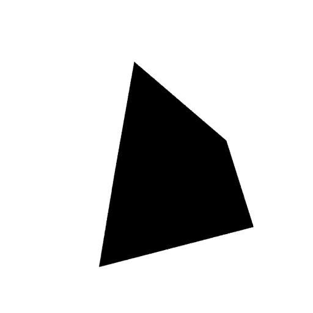

Founder, Manifest Advisors
Jennifer Tacheff
Growth leader. Ecosystem builder. Founder champion.
Launching a fund. Scaling a company.
Entering a new market.
Manifest makes it real.
Good company.
Ambitious work.
A selection of client engagements, leadership roles, and advisory ecosystems from Jen’s work.
Clear direction. A compelling story. The right connections. We help good people build what comes next.

Innovation strategyAI go-to-marketPrograms & conveningsHuman-centered ecosystemsBig ideas deserve more than a plan. They need focus, conviction, and someone who can help connect the dots. We bring the strategy, creativity, and hands-on partnership to move your next chapter forward.
A few moves we’ve helped make
Developer ecosystems grow through useful technology and the relationships around it. Working with Preston-Werner Ventures and ZEAL in a fractional CMO and COO capacity, Jen supported the visibility of RedwoodJS, developer and founder engagement, sponsorships, and partnerships. The work also included the inaugural RedwoodJS Conference for Builders in Grants Pass, Oregon.
Explore the workView all workJennifer has been instrumental in helping to shape PWV into what it is today. I encourage anyone building a company or growth strategy to reach out to her.
David Price
General Partner, Preston Werner Ventures (PWV)
Ideas in motion.
Big ideas.
Real progress.
Jen Tacheff brings growth strategy, creative thinking, and hands-on leadership to the moments that matter.
Meet Jen